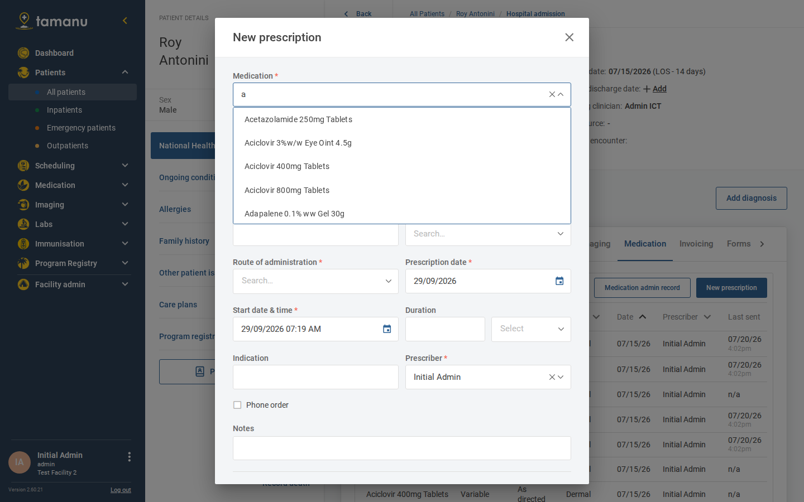
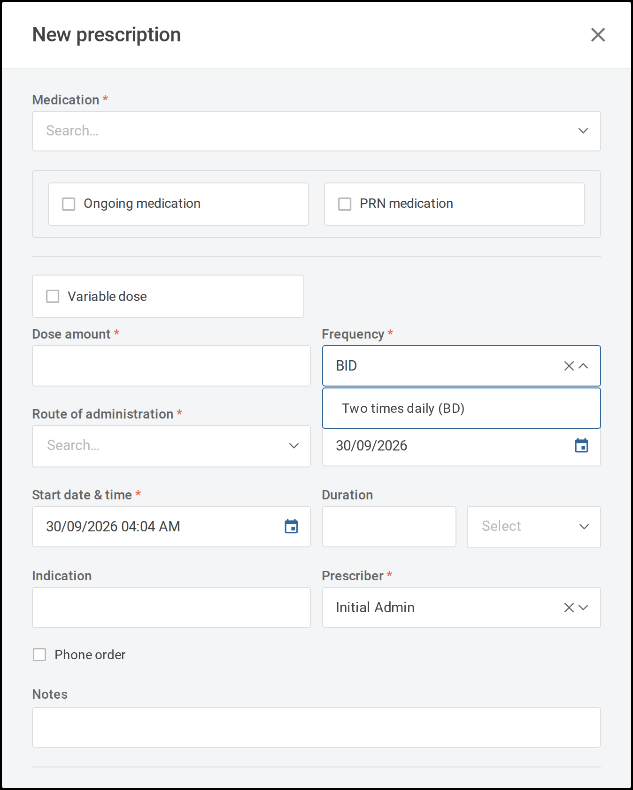
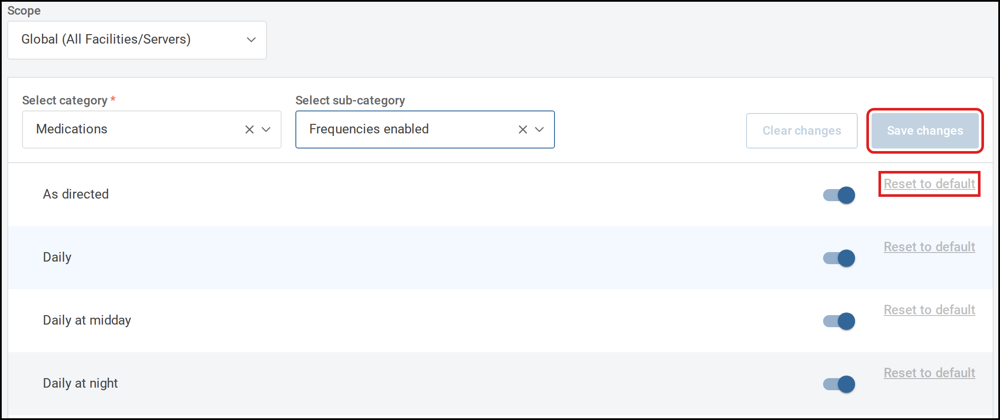
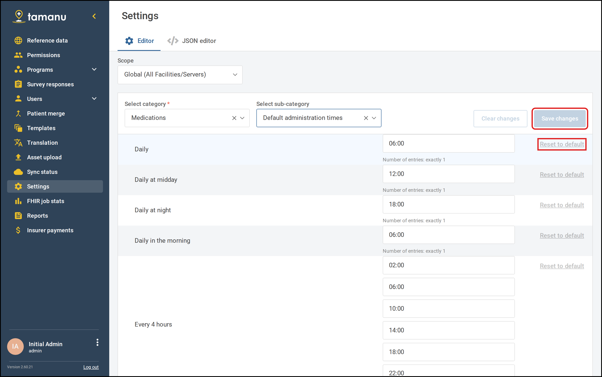
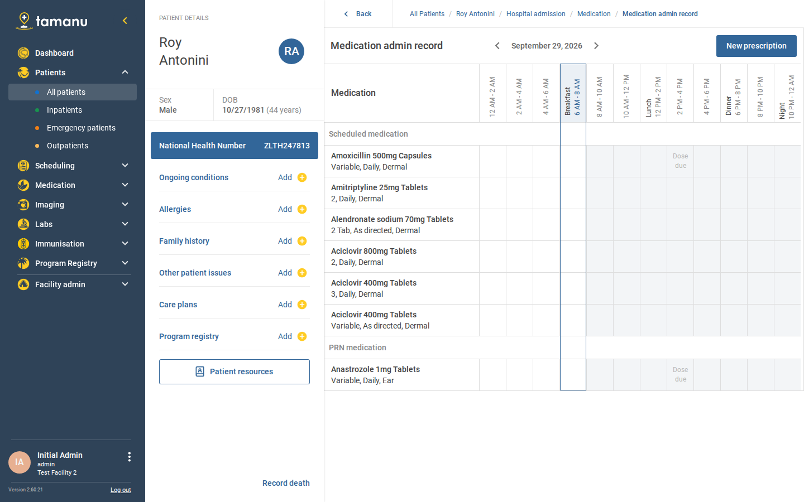
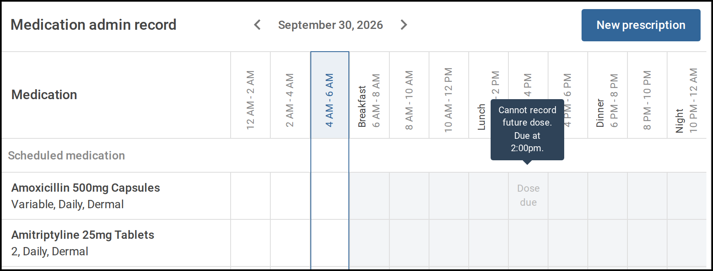
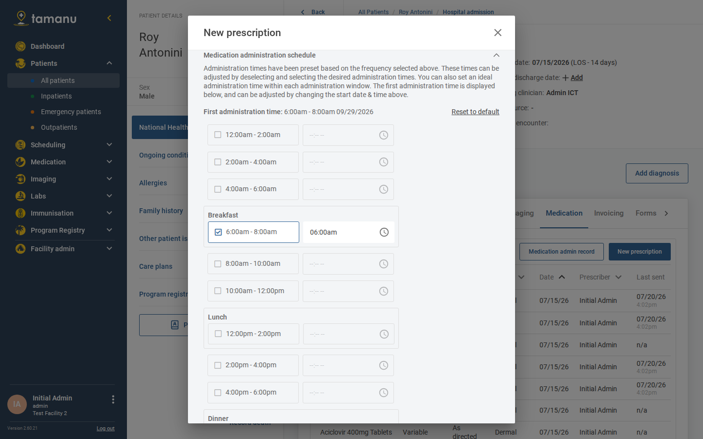

Prescribing, the medication administration record, medication sets, and sensitive medications.
These guides step system administrators through the set up of the Tamanu Medications Module. If it is
your first time implementing the Medications Module or digitising medication workflows in your clinical
setting, read the Medications Module Implementation Guide first.
Prescribing, administration, pharmacy notes, and sensitive medication access
!Warning
The Medications Module is not recommended for the following medications or clinical settings, whose
orders and administration should remain on paper:
IV infusion medications
Anaesthesia medications
Complex oncology protocols
Dialysis
ICU, PICU and NICU
Vaccines
All vaccines that appear in the Vaccine Schedule, or are selected when recording vaccine workflows, must
also be listed in the Drug reference data. See the Immunisations configuration
guides.
IV medications
IV infusions should remain on paper, however standard IV medications can be prescribed and their
administration recorded in Tamanu. The distinction is set out below.
IV medications
IV medications are intermittent intravenous drugs given as bolus doses or short-term infusions,
typically over minutes to a few hours at predetermined intervals, and prescribed with standard dosing
parameters such as milligrams, units or millilitres.
They are administered either as IV push, given directly into the IV line over seconds to minutes, or as
piggyback infusions, mixed in small volume bags of 50 to 250mL and infused over 30 minutes to 2 hours.
Examples:
Ceftriaxone 1g IV every 24 hours
Furosemide 40mg IV push twice daily
Morphine 2 to 4mg IV push every 4 hours as needed for pain
These follow standard pharmacy preparation protocols and can be administered using basic IV techniques,
without specialised infusion devices or rate calculations.
IV infusions
IV infusions are continuous intravenous therapies requiring precise rate control. They are measured in
units per time, such as mcg/min, units/hour or mg/hour, rather than total dose amounts. They require
infusion pumps for accurate delivery and often need frequent titration based on patient response and
clinical parameters.
Examples:
Norepinephrine starting at 0.1 mcg/kg/min, titrated to maintain MAP >65 mmHg
Insulin infusion beginning at 0.1 units/kg/hour with glucose-based adjustments
Heparin drip initiated at 18 units/kg/hour with PTT-guided titration
IV infusions require specialised nursing protocols and continuous monitoring, and often a critical care
setting, due to their potent effects and the need for rapid dose adjustment based on real-time
assessment.
Their documentation requirements are also more complex. An infusion record must capture multiple
time-stamped data points including initial rates, all rate changes with clinical rationales, cumulative
dosing calculations, concentration calculations and detailed patient response parameters. It must also
integrate monitoring parameters, linking blood glucose to insulin adjustments, PTT values to heparin
changes, or haemodynamic measurements to vasopressor titrations, and support double-verification
workflows, pump programming validation and detailed handover communications.
15.1Reference data
The reference data the Tamanu Medications Module needs, and the values each column accepts. Reference
data is configured through the reference data import spreadsheet, downloaded from and uploaded to your
Tamanu system.
For the settings that govern prescribing and administration see Settings, and for the
permissions required see Permissions.
Reference Data Types
See the Tamanu Reference Data Manual for how importing works.
Drug
The Drug reference data type configures the medication list available when prescribing.

The Medication field lists the drugs imported as reference data.
For a deployment where mSupply is also in use, the drugs list should be copied from the mSupply
essential medicines list.
✓Configuration tip
Set default values per medication for route, dosingUnit, dispensingUnit and notes. When that
medication is selected for prescription the defaults populate automatically, which speeds up creating
prescriptions.
Unique id for the drug. Letters, numbers and hyphens only.
code *
Unique code for the drug. Letters, numbers, hyphens, full stops and forward slashes only.
name *
Name for the drug, up to 255 characters. This is the medication name displayed in Tamanu.
visibilityStatus
current for drugs available for prescription, or historical for drugs that should not be prescribed and should not appear in Tamanu. Defaults to current if blank.
systemRequired
Marks the record as required by the system so it cannot be removed. Leave blank unless instructed.
availableFacilities
Restricts the drug to specific facilities. Must be a JSON array of facility ids, for example ["facility-a", "facility-b"]. Leave blank for all facilities.
route
The pathway through which the medication enters the body. Use one of the routes listed under Route of administration. This column is not validated on import, so an unrecognised value is accepted and will not display correctly. If no default is set, the user selects the route when prescribing. Leave blank if no default is required.
dosingUnit
The unit the medication is prescribed in, and the unit displayed on the medication administration record. Must be one of the units listed under Units. If not set, the user selects the unit when prescribing.
dispensingUnit
The unit pharmacy dispenses the medication in, used for invoicing. Must be one of the units listed under Units. Defaults to the dosing unit if not set.
unitConversion
Converts a prescribed dose into the correct number of dispensing units. Defaults to 1 if not set.
notes
A default note for the medication, such as instructions for administering or taking it. If not set, the field is empty by default when the medication is prescribed. Leave blank if no default is required.
isSensitive
Flags a medication as sensitive, so only users with the required permissions can view it. Input TRUE to set a medication as sensitive. Defaults to non-sensitive if blank. See Sensitive medications.
Stock levels are recorded in additional columns, one per facility, as described below.
Stock levels
To record stock levels for a facility, add a column whose header is that facility's id. There is no
column named facilityId: any column header that is not one of the columns above is read as a facility
id, and its cells set that facility's stock level for each drug:
0: medication out of stock
1 or above: medication in stock
blank: stock levels are unknown
unavailable: the medication is unavailable at that facility and does not appear in the medication
dropdown when creating a new prescription. Unavailable medications can still be recorded through the
ongoing medications table at the patient level
Because facility columns are read from the header, a blank cell still creates a stock record for that
facility with an unknown stock level.
A header that is not a real facility id fails the import, reporting that some facilities do not exist
or have been deleted. A mistyped facility id is the usual cause, since any unrecognised header is read
as one.
An export writes these columns back as the stored value: the number where a quantity was recorded, and
otherwise the status itself, as out_of_stock, unavailable or unknown. A re-imported export is
read the same way, so a round trip is safe.
Where a facility has mSupply as its source of truth for stock on hand, the importer does not overwrite
that facility's stock levels. See the Dispensing configuration guides.
Medication Sets
A medication set is a pre-configured group of medications commonly prescribed together for a specific
condition or protocol, enabling faster ordering and standardised care.
An example medication set is a standard set of medications prescribed following surgery:
Amoxicillin 500mg capsules, three times daily, orally, for 7 days
Oxycodone 10mg capsules, two times daily, orally, for 2 days
Paracetamol 500mg tablets, up to four times daily as needed, orally, for 7 days
Two reference data types configure medication sets: Medication Template and Medication Set.
Medication Template
Medication Template defines the default prescription details for each medication within a set.
Unique id for the medication template. This id is referenced when configuring Medication Set reference data. A single template can be used across multiple sets.
code *
Unique code for the medication template.
name *
Unique name for the medication template.
medication *
The id of the medication from the Drug reference data. The drug must already exist.
dosingUnit *
The unit for the dose. Must be one of the units listed under Units.
frequency *
Must be one of the frequencies listed under Frequency.
route *
Must be one of the routes listed under Route of administration. The display label is also accepted, so both intravenous and IV work.
doseAmount *
The numerical dose amount, or the word variable where the dose is variable. The cell cannot be left empty.
ongoingMedication
Input TRUE if the medication should default to ongoing. Defaults to FALSE.
prnMedication
Input TRUE if the medication should default to PRN. Defaults to FALSE.
duration
The length of time and time unit, for example 7 days. Supported units are hours, days, weeks and months. Both the length and the unit must be given together. Leave blank if no default duration is required.
notes
Default notes relevant to the medication, such as instructions for taking it. Leave blank if no default is required.
dischargeQuantity
Default quantity of medication units given to the patient. Leave blank if no default is required.
visibilityStatus
current or historical. Defaults to current if blank.
A duration cannot be set when the frequency is Immediately, or when the medication is flagged as
ongoing. The import reports an error in both cases.
Medication Set
Medication Set defines which medications are included in a set. Import it after, or at the same time
as, Medication Template so the templates it references already exist.
The medication template ids included in the set, separated by commas. A single template can be used across multiple sets. This column is not validated on import, so an empty cell is accepted and leaves the set unchanged rather than reporting an error.
visibilityStatus
current for sets available for ordering, or historical for sets that should not appear in Tamanu. Defaults to current if blank.
The medicationTemplates cell is the complete list for that set. Templates removed from the cell are
removed from the set on the next import. Listing the same template twice, or naming a template that
does not exist, reports an error.
iNote
Clearing the cell entirely does not empty the set. To remove every medication from a set, set its
visibilityStatus to historical instead.
Prescriber
The list of prescribers is populated from the active users in your Tamanu deployment. To add a new
user, see Users: Creating and Managing Users.
Medication Not Given Reason
!Required
This reference data type must be configured to complete the medication administration record workflow
when a medication is recorded as not given. Without it, staff cannot record a medication as not given.
current for reasons available for selection, or historical for reasons that should no longer be available. Defaults to current if blank.
Hard coded fields
The following fields are hard coded in Tamanu and cannot be configured. To request a new value, make a
request to your system administrator or Tamanu project manager.
Units
Used for dosingUnit and dispensingUnit. Input the value exactly as shown.
Each unit also has a short label used where the design requires a more compact display, for example
Tab for Tablet and Supp for Suppository. Units are also pluralised on dispensed labels where
the dose is more than one, and each dosing unit carries an administration verb such as Take, Give,
Apply, Insert, Inhale or Administer, which appears on patient-facing instructions.
Route of administration
Input the value shown in the left column. Where a route displays differently in Tamanu, the display
label is shown alongside it.
Value
Displays as
dermal
Dermal
ear
Ear
eye
Eye
inhaled
Inhaled
intramuscular
IM
intraocular
Intraocular
intravenous
IV
intravitreal
Intravitreal
nasal
Nasal
oral
Oral
rectal
Rectal
subcutaneous
S/C
sublingual
Sublingual
topical
Topical
vaginal
Vaginal
Frequency
Tamanu includes a list of frequencies supporting common dosing patterns. The selected frequency
determines the default administration schedule for the prescribed medication, which can be edited when
prescribing.
Frequency
Default administration times
Doses per day
Daily in the morning
06:00
1
Daily at midday
12:00
1
Daily at night
18:00
1
Daily
06:00
1
Two times daily
06:00, 18:00
2
Three times daily
06:00, 12:00, 18:00
3
Four times daily
06:00, 12:00, 18:00, 22:00
4
Twice daily - AM and midday
06:00, 12:00
2
Every 4 hours
02:00, 06:00, 10:00, 14:00, 18:00, 22:00
6
Every 6 hours
00:00, 06:00, 12:00, 18:00
4
Every 8 hours
06:00, 14:00, 22:00
3
Hourly
every hour
24
Half-hourly
every half hour
48
Every second day
06:00
every second day
Once a week
06:00
weekly
Once a month
06:00
monthly
Immediately
not scheduled
one-time
As directed
not scheduled
as directed
!Warning
An administration schedule cannot be set for Immediately or As directed, and the times for
Hourly and Half-hourly are fixed. Configuring administration times for these frequencies has no
effect.
Searching by synonym
Frequency selection supports searching by synonym. For example Daily at night is also searchable by
nocte and nightly. When searching by a synonym the primary frequency is returned with its first
synonym shown in brackets, so the meaning stays clear while supporting the medical abbreviations still
in common use.

Searching Frequency for BID returns Two times daily (BD).
Frequency
Synonyms
Daily in the morning
mane, Morning
Daily at midday
midday
Daily at night
nocte, nightly
Daily
D, Every 24 hours, q24h, q1d, Q.D., QD
Two times daily
BD, Every 12 hours, q12h, BID, B.D., Twice a day
Three times daily
TID, TDS, T.I.D.
Four times daily
QID, QDS, Q.I.D.
Every 4 hours
q4h, 4h, 4 hourly, 4 hrly
Every 6 hours
q6h, 6h, 6 hourly, 6 hrly
Every 8 hours
q8h, 8h, 8 hourly, 8 hrly
Hourly
Each hour, Q1h, 1/24, Every hour, Every 60 mins, Every one hour
Half-hourly
Each half-hour, Q30m, 30/60, Every half hour, Every 30 mins, Every thirty mins
Every second day
QOD, Q.O.D., Every other day
Once a week
Weekly, Once weekly
Once a month
Monthly, Q.M., QM, Once monthly
Immediately
STAT
As directed
MDU, As directed by doctor, M.D.U., As directed by prescriber, Variable dose, When required
Twice daily - AM and midday
AM and midday, BD - AM and midday, AM and lunch, BD - AM and lunch
Reassigning the primary frequency, or the ordering of synonyms, requires a change to the Tamanu code.
Individual frequency options can be disabled where they are not required for a deployment. See
Frequencies.
15.2Settings
The settings that govern prescribing, administration and dispensing in the Tamanu Medications Module,
and the automated behaviour they drive. Settings are managed in the Settings admin panel.
For the reference data these settings act on see Reference data, and for the
permissions required see Permissions.
Settings
Settings are managed in the Settings admin panel.
Pharmacy order settings, including the default prescription type sent when a user selects 'send to
pharmacy', are covered in the Dispensing configuration guides.
Frequencies
All hard coded frequencies are available by default. A frequency option can be disabled where it is not
relevant to your deployment. Updates apply to all facilities in the deployment.
Field
Value
Scope
Global (All Facilities/Servers)
Category
Medications
Sub-category
Frequencies enabled
Setting
Toggle the required frequency off to disable it
Default
All frequencies enabled

Turn a frequency off, then select Save changes.
Default administration schedule
For each frequency, the default administration schedule and ideal administration time can be changed.
Field
Value
Scope
Global (All Facilities/Servers)
Category
Medications
Sub-category
Default administration times
Setting
For each frequency, set the ideal administration times in the JSON editor. The default administration window is determined from the time set, so an ideal time of 09:00 falls in the 08:00 to 10:00 window.
Default
The standard administration times for each frequency, as listed under Frequency

Each frequency lists its ideal times under Default administration times.
Immediately, As directed, Hourly and Half-hourly are not listed, because their administration
times are either not scheduled or fixed.
Required format:
Times must be in 24-hour format and written in double quotation marks:
[
"06:00"
]
Where a frequency has multiple doses in a day, separate each time with a comma:
An error displays if the number of administration times does not match the selected frequency:
Screenshot needed
the error shown for an incorrect number of administration windows
Each time must also fall in a different two-hour administration window, so two doses cannot be
scheduled in the same window.
Medication administration record
Administration windows
The medication administration record (MAR) maintains a record of all medications administered to a
patient during an episode of care. The MAR displays 12 two-hour administration windows covering a
24-hour period. These windows are not configurable.
The schedule displayed on the MAR depends on the selected frequency and administration schedule for
the prescribed medication.

The Medication admin record shows 12 two-hour windows.
Four windows carry a period label, used where the design shows the time of day rather than the hours:
06:00 to 08:00 is breakfast, 12:00 to 14:00 is lunch, 18:00 to 20:00 is dinner, and 22:00 to midnight
is night.
Ideal administration times can be set for each frequency within each administration window. The ideal
administration time displays in a tooltip when hovering over a due dose on the MAR.

Hovering over Dose due shows Cannot record future dose. Due at 2:00pm.
Administration schedule
The administration schedule is set when prescribing. A default schedule is applied based on the
selected frequency and can be edited if required.

The Medication administration schedule fills in from the chosen frequency.
A number of workflows are automated to support patient safety, clinical accuracy and clinician
efficiency, by maintaining a cleaner and more accurate medications list.
Unless specified, these work without configuration.
Dispensing quantity autocalculation
The dispensing quantity can be calculated automatically from the dose, frequency and duration of a
prescription, avoiding manual calculation. Automatically calculated quantities can still be edited.
Field
Value
Scope
Global (All Facilities/Servers)
Category
Medications
Sub-category
Dispensing
Setting
Dispensing quantity autocalculation
Default
Disabled
Immediate medications
A prescription with a frequency of Immediately is a one-time order administered without delay due to
the urgency of the circumstances. An example is "Benadryl 50mg orally STAT" for a patient having an
allergic reaction.
As these orders are made without a duration, they are automatically discontinued once a single dose has
been recorded, whether Given or Not given, with the following discontinuation details:
'Discontinued by' is set to 'System'
'Discontinued reason' is set to 'Prescription end date and time reached'
Medication resumed
A paused medication is resumed by the system if it remains paused after the pause duration has passed.
Medication discontinuation
A medication is discontinued automatically if it remains active when its end date and time is reached.
The end date and time is calculated from the prescription start date and time and the duration. A
prescription without a duration must be discontinued manually when required.
Where a medication has a start date and time and a duration recorded, the end date and time can be
viewed in the medication details modal once the prescription is complete.
Screenshot needed
the medication details modal displaying the medication end date and time
Automatically discontinued medications have the following discontinuation details:
'Discontinued by' is set to 'System'
'Discontinued reason' is set to 'Prescription end date and time reached'
Ongoing medications
For details on ongoing medications logic, see Manage ongoing medications.
Medication due task
To support tracking of medications due for administration, a Medication due task displays in the
Upcoming tasks table on the clinician dashboard when a medication is due.
Screenshot needed
the medication due task displaying in the upcoming tasks table
Medication due task setup
To enable the medication due task:
Enable the tasking feature. See the Tasks configuration guides
Assign the following permissions to users who should see the task:
list for Tasking
read for Tasking
list for MedicationAdministration
The task does not need to be configured through tasking reference data. It is available automatically
when the medications and tasking modules are both in use.
Medication due task criteria
The task displays when all of the following are met:
The patient has an active inpatient encounter
The medication is a scheduled medication. PRN medications do not trigger a task
The medication has a Due time either in the past, from the start of the encounter to the current
time, or within an upcoming window that begins when the user lands on the dashboard. That window is 8
hours by default and is set per facility by the tasking upcoming tasks time frame setting, so a
deployment that has changed it sees a different window here. See the Tasks configuration
guides
Medication due task behaviour
The task displays on the clinician dashboard only, not on the patient-level task list
The task Due time displays as the ideal administration time
The task is removed once the medication is recorded as either Given or Not given
Where multiple medications are due at the same ideal time for a patient, one task displays for that
time. A task covering multiple medications is removed only once all its medications are recorded as
given or not given
Selecting the task from the dashboard opens the MAR
Where a medication is discontinued, all its tasks falling after the discontinuation time are deleted
Where an encounter is discharged, all tasks falling after the time of discharge are deleted
15.3Permissions
The permissions required to prescribe, administer and manage medications in the Tamanu Medications
Module, and to view medications flagged as sensitive.
For the reference data these permissions act on see Reference data, and for the
module's settings see Settings.
Permissions
See the Users configuration guides for more detail on roles and permissions in Tamanu.
Prescriptions and ongoing medications
Required to prescribe a medication and manage the ongoing medications list:
list for Medication
View a list of medications at the encounter level
View the ongoing medications list and last encounter discharge medications
View prescription details from any of the above views
read for Medication
Print a prescription
write for Medication
Pause and resume a medication
Discontinue a medication, including through the discharge workflow
Set discharge quantity and repeats for a medication
create for Medication
Create a new prescription through an encounter
Add existing ongoing medications to an encounter
Create a new ongoing medication record through the patient-level ongoing medications table
Sensitive medications
Required to view, manage and prescribe medications flagged as sensitive. See
Sensitive medications:
list for SensitiveMedication
View a sensitive medication in a view that lists medications, being the encounter level medications
table, the medication administration record, the print prescription modal, the discharge modal and
the patient level medications table
read for SensitiveMedication
View prescription details for a sensitive medication
View administration record details for a sensitive medication
write for SensitiveMedication
Pause and resume a sensitive medication
Discontinue a sensitive medication, including through the discharge workflow
Set discharge quantity and repeats for a sensitive discharge medication
Print a sensitive prescription
create for SensitiveMedication
Create a prescription for a sensitive medication
Add existing ongoing sensitive medications to an encounter
Create a new ongoing sensitive medication record through the patient-level ongoing medications table
Medication administration record
Required to view the MAR, record administration and manage records:
list for MedicationAdministration
View the MAR
View medication due tasks in the clinician dashboard 'Upcoming tasks' table
read for MedicationAdministration
View details of an administration record
write for MedicationAdministration
Record a medication error
Change the status of an administration record
Edit administration record details
Add an additional dose to an administration record
create for MedicationAdministration
Record a medication administration, as either given or not given
Pharmacy note
Required for the pharmacy note functionality:
write for MedicationPharmacyNote
Edit an existing pharmacy note
create for MedicationPharmacyNote
Record a new pharmacy note. Without this permission the field is read only
Admin panel
Reference data
All reference data types require ReferenceData permissions for import and export:
For import, write and create for ReferenceData
For export, list for ReferenceData
Settings
Required to manage medication related settings:
read for Setting
View settings
write for Setting
Modify settings
Sensitive medications supported from v2.39 onwards
iNote
Deployments running a version earlier than v2.39 cannot flag medications as sensitive. Confirm your
deployment version before configuring this.
This feature flags a medication as sensitive, so that only users with the required permissions can view
and interact with it.
!Warning
Use this feature rarely. Medication information is critical for safe care, and hiding it from staff
without the permission carries clinical risk.
To configure a medication as sensitive:
Set the medication as sensitive in the Drug reference data. See Drug